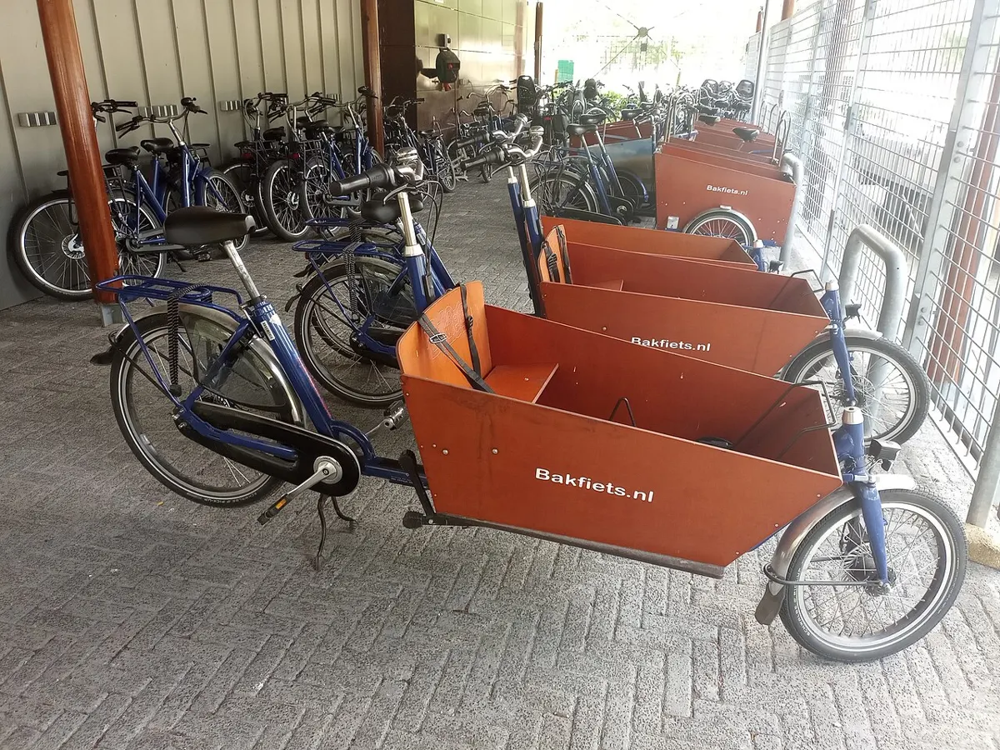

Тип велосипеда
Грузовой велосипед
Cargo bike
Велосипед для перевозки детей и грузов: с коробом впереди или удлинённым багажником.
Длиннобазные «бакфитсы» (bakfiets, Нидерланды) с ящиком впереди, лонгтейлы с удлинённым задним багажником, трёхколёсные. Всё чаще они электрические. Широко используются для доставки в городах Европы.
Отличительные черты
- Короб или удлинённая платформа
- Мощные тормоза
- Часто — электропривод и планетарная втулка
Уход
Соблюдайте допустимую нагрузку, следите за тормозами и рулевой тягой (у длиннобазных).
